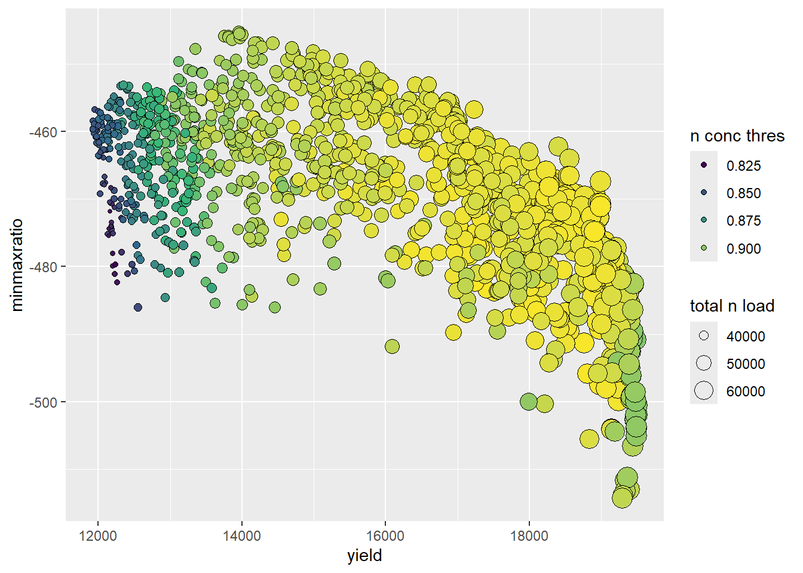
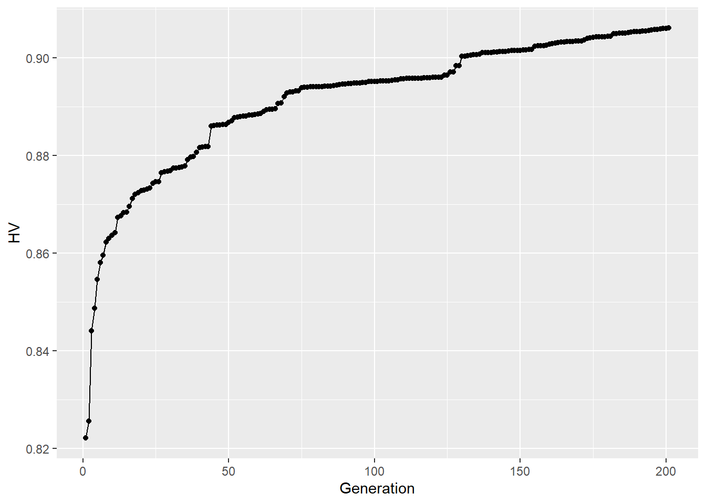

Section 22 Optimization
WP5 of the OPTAIN project is concerned with optimizing the implementation of NSWRMs in the landscape. to perform this optimization, “CoMOLA” will be used which uses NSGA2, a genetic optimization algorithm. This setup follows the D5.1 protocol Strauch and Schürz (2024).
RECALC_MANAGEMENT_SCEN = FALSE
RECALC_MEASR_SCEN = FALSE
OUTPUT_VIS = FALSE
if(TRUE){print(paste("Chapter last run:", Sys.Date()))}## [1] "Chapter last run: 2025-02-28"22.1 Introduction
22.1.2 The Pareto Frontier
The only catchment management solutions (CMS) we are interested are those that, when measured by our objective functions (OFs), lie on our “Pareto Frontier”. ie. they are pareto efficient. This will give us a “tradeoff spectrum” that stake holderrs can use to make choices.
22.1.3 NSGA-II
CoMOLA uses NSGAII (Non-dominated Sorting Genetic Algorithm – Deb et al., 2002) as an optimization algorithm. It is very widely used, however slightly outdated. The main thing that makes this algorithm outdated is that it can only handle 4 objective functions. However this is not really an issue for us as we only really need four, and if we need more than four, we can create an integrated indicator that sums up multiple values (the drawback of this is that the weighting needs to be figured out).
NSGAII is based on non-dominated sorting and crowding distance.
22.1.4 The Objective Space
To define the pareto frontier, we need to decide on our objectives. These are extremely important as they detetermine the results of the optimization, which will take weeks to run. We want to optimize for:
- Water Retention (Maximize)
- Nutrient Retention (Maximize)
- Agricultural Production (Maximize)
- Implementation costs of NSWRMs (Minimize)
The numerical implementation of these objectives will be done by each case study. It is therefore our task to decide on these. This is being tracked in issue #109.
22.2 Measure Implementation
In the previous chapter, our measures were classified, resulting in the creation of the measure_location.csv file. It is now time to read this data into SWATmeasR and to prepare our SWAT setup for optimization.
22.2.1 SWATmeasR project setup
22.2.1.1 Libraries
# remotes::install_github("chrisschuerz/SWATfarmR")
# remotes::install_git('https://git.ufz.de/schuerz/SWATmeasR')
require(SWATmeasR)
require(SWATfarmR)
require(sf)
require(dplyr)
require(stringr)
require(DT)
require(readr)We will create a new directory in our SWAT setups folder to contain the optimization setups. For now, I will just paste in the calibrated setup, in the future hopefully we will be able to copy from the documented calibration sections. For now this is txt_best_cal.
dir.create("model_data/cs10_setup/optimization", showWarnings = F)
txt_path = "model_data/cs10_setup/optimization/txt/"Restting and deleting the measure project (this CS10_MSR_v8.measr is from the measure scenarios) (is this necessary?)
22.2.1.2 Prepare management inputs
“The definition of management related NSWRMs requires to prepare a R data object which provides all scenarios in a list structure. To prepare the data all SWATfarmR projects which provide the management for management related NSWRMs must be available in the SWAT+ project folder. Be careful with other SWATfarmR projects which are not the status quo case or one of the scenarios. If these are included and do not fit the status quo this can trigger an error. But you can also specifically define the scenario farmR projects (as done below).”
TODO: we need to get the newest farmR. See issue #116
“You can also specifically define the scenario farmR projects. If not all farmR projects in the project folder will be considered. The scenario farmR projects in the SWAT+ project folder must have the same name as the scenario is then called in the NSWRMs. Be careful to rename the .farm AND the .mgts objects in the project folder.”
“The management preparation routine adjusts the dates of operations in the scenarios which are the same as in the status quo but were assigned different dates due to the random sampling in SWATfarmR. But only operations which are newly introduced in the scenarios should have different dates.
If operations in the status quo and the scenarios should be treated as the same (so they are the same operation type), but they have different op_data1 you can define synonyms, so that e.g. tillage operations with different tillage types are still treated as the same operation and the dates will be corrected in the scenario.”
should add more detail on what this does
syns <- tibble::tibble(status_quo = c('fldcult', 'harrow', 'rowcult', 'fallplow'),
scenario = c('notill', 'notill', 'notill', 'notill'))“If start and end year are not already adjusted in the project folder you can do that now for the status quo and all scenarios to ensure that all managements cover the same time period.”
“The following function might give an error if you have more than one land use class without management schedules
solution 1: define mgt operations for those classes and run farmr again
solution 2: re-install the farmr using
remotes::install_github("chrisschuerz/SWATfarmR/tree/dev_ms")and runfarmragain”
prepare_management_scenario_inputs(
project_path = txt_path,
status_quo = stat_quo_farmR,
scenarios = scenario_farmR,
synonyms = syns,
start_year = start_year,
end_year = end_year,
write_path = mgt_scen_write_path,
write_csv_mgts = TRUE
)The prepared management files are always saved with a time stamp in the file name. This routine identifies the most recent one which is then used as input in the NSWRM definition. Define the file name manually if another file should be used.
mgt_def_files <- list.files(mgt_scen_write_path, pattern = '.rds')
time_stamps <- as.numeric(gsub('_', '', substr(mgt_def_files, 1, 13)))
last_mgt <- which.max(time_stamps)
mgt_path <- paste0(mgt_scen_write_path, '/', mgt_def_files[last_mgt])
mgt_path## [1] "model_data/input/measure/management_scenario_inputs/20241121_1424_mgt_scenarios.rds"22.2.1.3 Creating a new measR project
file.remove(list.files(path = "model_data/cs10_setup/optimization/txt", pattern = ".measr", full.names = T))## [1] TRUE## Input files read from the SWAT+ project located in
## model_data/cs10_setup/optimization/txt/
## SWATmeasR object saved as 'cs10_comola.measr' in this path.22.2.1.4 Load measure definitions
“The required input file, which provides all necessary parametric inputs, is provided with the input argument file_path. To indicate which type of NSWRM is defined the correct type must be passed with the argument type. The optional argument overwrite gives the option to overwrite already existing NSWRM definitions of the same type. By default overwrite = FALSE. Therefore, if for example a definition of land use type NSWRMs already exists, but a new one should be loaded, overwrite has to be set to overwrite = TRUE. The five possible NSWRM types require different definition input files, which will be explained in the following.”
22.2.1.4.1 Land use definitions
The following are our land use definitions.
luse_path <- "model_data/input/measure/parameterisation/measure_landuse_CS10.csv"
readr::read_csv(luse_path, show_col_types = FALSE) %>% datatable()The strange thing you might notice about the management is that it is using the schedules of a seemingly random agricultural field in the model setup. However, this is nor a random schedule, it is one picked out specifically because it only has grass stuff scheduled.
Lessons Learned: It would probably be better to define a specific management for our measures.
Lets add it to the measure Project:
22.2.1.4.2 Wetland Definitions
Our wetlands are technically Retention Ponds, however in the model it makes the most sense to call them “wetlands”. The provided definition file is here:
wetl_path <-'model_data/input/measure/parameterisation/measure_wetland_CS10.csv'
read_csv(wetl_path, show_col_types = FALSE) %>% datatable()These are mostly the default parameters and could be improved. See issue #117
22.2.1.5 Load Measure Locations
This file was created in the previous section 21.
22.2.1.7 Testing Scenarios
Micha Code:
source('model_data/input/measure/calc_Indis.R')
foo1(c('dplyr' , 'readr' , 'tidyverse', 'data.table', 'remotes', 'devtools',
'xts', 'dygraphs', 'R.utils', 'foreach', 'doParallel', 'data.table',
'ggplot2', 'fmsb', 'patchwork'))
foo2('SWATmeasR')
foo3('hydroGOF')Define paths and settings:
measr_name <- 'cs10_comola'
scen_out <- 'scenario_outputs'
cha_id <- 37
wd <- "model_data/cs10_setup/optimization"Grabbing measures:
project_path <- paste0(wd,'/txt')
cal_files <- dir(paste0(wd,'/cal_files'), full.names = T)
load_measr(paste0(project_path, '/', measr_name,'.measr'))
assign('measr', get(gsub('.measr', '', measr_name)))
loca <- measr$.data$nswrm_definition$nswrm_locations
measr.list <- c('statusquo',unique(loca$nswrm),'all')
measr.list## [1] "statusquo" "buffer" "grassslope" "notill" "wetland"
## [6] "all"Creating the hru_agr.txt requires detecting agricultural fields. in our case this can be done with the janky prefixes _0, a_, _1, _2 . They are janky because the SWATxxxxR packages kept truncating them :(. This file is important for indicator calculation.
agri_prefix <- c("_0", "a_", "_1", "_2")
hru_dat <- read_tbl('hru-data.hru', project_path, n_skip = 2)
hru_agr <- hru_dat %>%
filter(substring(lu_mgt, 1, 2) %in% agri_prefix) %>%
select(hru_id = id)
write.table(hru_agr, paste0(project_path, '/hru_agr.txt'),
quote = F, row.names = F)Running the scenarios: (code modified from Micha source)
run_scenarios(swat_exe = 'Rev_61_0_64rel.exe',
base_path = "model_data/cs10_setup/optimization/",
scen_output = "model_data/cs10_setup/optimization/measure_scenario_output",
measure.list = measr.list,
outflow_reach = cha_id
)22.2.1.7.1 Calculating Indicators
In case an ensemble of calibration files is provided (in folder cal_files), set ensemble=T The resulting dataframe will provide you the ensemble mean as well as the ensemble minimum (lower) and maximum (upper) of the respective indicator. If no cal file ensemble can be provided, set ensemble=F (but then make sure you have a calibration.cal with fitted parameters in the txt folder)
scen_out = "measure_scenario_output"
path <- paste(wd, scen_out, measr.list[c(1:length(measr.list))], sep='/')
channel <- 'cha037'
cha_aa_all <- ind_cha_aa(path = path, channel=channel, ensemble=F)
if(length(cal_files)>0){
Q_metrics_sq <- get_ens_Q_metrics()
}else{
Q_metrics_sq <- ind_cha_dayII(path, channel = channel, ind = 'all',
ensemble = F)[1, c(2:12)]
}
Q_p05_sq <- Q_metrics_sq$Q_p05
Q_p95_sq <- Q_metrics_sq$Q_p95
cha_day_all <- ind_cha_dayII(path, channel=channel, 'all',
ensemble=F,
threshold_lowQ = Q_p05_sq, #adjust if appropriate
threshold_highQ = Q_p95_sq, #adjust if appropriate
threshold_N = 0.775, #adjust if appropriate
threshold_P = 0.06, #adjust if appropriate
threshold_Sed= 50) #adjust if appropriate
### collect HRU-based indicators related to water quality (average annual losses)
hru_aa_nb_all <- ind_hru_aa_nb(path, a='agr', ensemble=F)
### collect HRU-based indicators related to water quantity (average annual value)
hru_aa_wb_all <- ind_hru_aa_wb(path, a='agr', ensemble=F)
### collect HRU-based indicators related to water quantity (aa for spec. months)
## please specify start and end months of interest for the soil water analysis
# this is an example for printing sw for the period May to September and also
# for each single month in that period
sw_periods <- list(c(5:9), 5, 6, 7, 8, 9)
hru_mon_all <- ind_hru_mon_wb(path, period = sw_periods, a='agr', ensemble=F)
# collect cropping information for all scenarios - grain units and cultivated
# hectare average annual
# define 1) path, 2) crop selection, 3) type of output: a) yield, b) ha, 4)
# specify grain units equivalent for all of the selected crops (if you just keep
# the parameter 'grain_units', there is already a parameterisation for 'wwht',
# 'akgs', 'wbar', 'wira', 'csil', 'wiry', 'sgbt','barl'. The measure list
# (measr.list) can be adapted to the measures you want to compare
crop_sel <- c('wwht', 'oats', 'swht', 'pota', 'barl') #adjust
# If you want to use grain units to normalize the basin wide sum of crop yields
# by crop-specific nutritional values, please specify grain units for relevant
# crops The grain units must be applicable to dry mass!!!
grain_units <- data.frame('barl' = 1.163,
'wwht' = 1.209,
'oats' = 0.682,
'swht' = 1.174,
'pota' = 1)
### collect basin-wide area of cropland
crop_aa_ha <- ind_bsn_aa_crp(path, crop_sel, out_type = "ha", grain_units, ensemble=F)
### collect sum of grain units for whole basin
#run next line only if you want to calculate yield based on grain units
crop_aa_gu <- ind_bsn_aa_crp(path, crop_sel, out_type = "yield", grain_units, ensemble=F)
### collect cropping information for all scenarios - Crop specific average annual yield and ha
crop_aa_all <- ind_bsn_aa_crp_ha_Y(path, crop_sel, ensemble=F)22.2.1.7.2 Plotting Results
ens_results <- get_all_ens_results()
# calculate percentage changes to status quo and derive statistics
# (mean, median, min, max) in case a cal file ensemble has been used
ens_stats_all <- calc_ens_stats()
# plot the scenario results as stacked bars
# default here is to plot the median values (perhaps more robust than mean)
if(length(cal_files)>0){
df <- ens_stats_all %>%
filter(stats == 'median', scen_name != 'statusquo') %>%
select(-stats)
}else{
df <- ens_stats_all[-1,]
}
df_plot_long <- melt(setDT(df), id.vars = c("scen_name"), variable.name = "indi")
#plot_indicators(df_plot_long, separate=F)
plot_indicators(df_plot_long, separate=T)
# save as pdf
pdf('model_data/results/plot_indicators_all_median.pdf', width=7.5, height = 10)
plot_indicators(df_plot_long, separate=F)
dev.off()
# save as pdf
png('model_data/results/plot_indicators_all_median.png', width = 7.5, height = 10, units = "in", res = 72)
plot_indicators(df_plot_long, separate=F)
dev.off()
# generate results table
# In case cal file ensemble was used the table shows median, min, and max values
# for % changes to status quo. The status quo itself is shown in absolute values
# in SWAT model units.
write_results_table(outfile = "model_data/cs10_setup/optimization/measure_scenario_output/ind_scenario_results.csv")22.3 Economic Model Setup
To account for the implementation costs of our measures, we need to set up the Economic model
22.4 CoMOLA Setup
22.4.1 Python Installation
CoMOLA runs on Python which means we need to make sure python is installed (which it should be from the API chapter 9.1.2 However, we will create a new CoMOLA environment.
require(reticulate)
conda_create("comola", # environment name
packages = c("numpy"), # required packages
conda = "auto", # auto-locate the conda exe
python_version = "3.11.9")
python_path = conda_python("comola")
# you need to change your R environment path in this file
usethis::edit_r_environ()
# RETICULATE_PYTHON="YOUR ENVIRONMENT PATH/python.exe"
# restart your R session.
py_config()
# If everything is right, you should get something like:
# python: YOUR ENVIRONMENT PATH/python.exe libpython: YOUR ENVIRONMENT
# PATH/python39.dll pythonhome: YOUR ENVIRONMENT PATH version: 3.9.7 (default,
# Sep 16 2021, 16:59:28) [MSC v.1916 64 bit (AMD64)] Architecture: 64bit numpy:
# YOUR ENVIRONMENT PATH\lib\site-packages\numpy numpy_version: 1.21.2
# After this it should work :)Note: the Numpy version is different from protocol, issue?
22.4.2 CoMOLA Files
We acquire the COMOLA project setup from project partners UFZ:
https://github.com/michstrauch/CoMOLA_SWATplus
Which is located here in our repository:
model_data/comola/CoMOLA_SWATplus
The file structure of this setup looks like this:
Figure 22.1: COMOLA File structure
The files we need to modify are colored red.
- The txt folder requires our SWAT setup + the measr project we created earlier in this section
- SWAT.R file needs to be modified with our desired objective functions
- config.ini needs to be updated with the path to R.exe and Python.exe. Here we also define the population and generation size of our optimization runs.
22.4.2.1 Optimization TXT
We will import our TXT folder to the COMOLA txt folder. The .measr file in this txt is vital to the optimisation, and was the one generated in 22.2.1.3.
R.utils::copyDirectory(from = "model_data/cs10_setup/optimization/txt",
to = "model_data/comola/CoMOLA_SWATplus/models/SWAT/txt",
recursive = TRUE)And adjust the run periods and warming up period (skip printing length)
# start, end, and warm-up period:
yrc_start = 2013
yrc_end = 2022
nskip = 2
time.sim <- readLines("model_data/comola/CoMOLA_SWATplus/models/SWAT/txt/time.sim")
time.sim[3] = paste0(" 1 ",yrc_start," 366 ",yrc_end," 0")
time.sim[2:3]## [1] "day_start yrc_start day_end yrc_end step "
## [2] " 1 2013 366 2022 0"writeLines(time.sim, "model_data/comola/CoMOLA_SWATplus/models/SWAT/txt/time.sim")
print.prt <- readLines("model_data/comola/CoMOLA_SWATplus/models/SWAT/txt/print.prt")
print.prt[3] = paste0(nskip, " 1 ",yrc_start," 0 0 1 ")
print.prt[33] = "hru_wb n y n n"
print.prt[41] = "channel n n n n"
print.prt[42] = "channel_sd y n n y"
writeLines(print.prt, "model_data/comola/CoMOLA_SWATplus/models/SWAT/txt/print.prt")Note, the object.prt file should look like this, if it doesn’t already from 19. Where “37” is the outlet channel of the catchment.
22.4.2.2 Path updates:
Next, we will update our SWAT.R File. The following changes were made: (commented out was original code)
22.4.2.3 Grain Units:
Updating grain units to match our use-case. Read more about these in 17.4.
# grain_units <- data.frame('wbar' = 1.163,
# 'csil' = 1.071,
# 'wwht' = 1.209,
# 'wira' = 1.429,
# 'barl' = 1.163,
# 'akgs' = 0.682,
# 'wiry' = 1.174,
# 'sgbt' = 1)
grain_units <- data.frame(
'wwht' = 1.209,
'barl' = 1.163,
"oats" = .84,
"swht" = 1.04,
"pota" = .22
)Objective Functions:
# total n load (kg/yr)
fit1 <- ind_cha_aa(txt_path, 'cha037')[2] * -1 #loads should be minimized
# min max ratio
fit2 <- ind_cha_day(txt_path, channel = "cha037")[11] * -1
# average annual sum of grain units in whole basin (be very careful with ind parameter)
fit3 <- ind_bsn_aa_crp(txt_path, crop_sel = names(grain_units), ind = "grain_units", grain_units = grain_units)
# frequency total N conc lower than threshold
fit4 <- ind_cha_day(path = txt_path, channel = 'cha037', ind = "Nconc_days", threshold_N = 0.775)[14]Updating Config.ini:
We need to update the following:
file_path_r, which can be found using theR.home("bin")command.file_path_python, which can be found using theconda_python()commandpop_size, which control the amount of mutants in each generation.max_generationswhich controls the amount of repetitions the algorithm performs
The total number of runs to do will be pop_size * max_generations. For optain, this will be 100x200?
r_path = R.home("bin")
python_path = reticulate::conda_python("comola")
python_path <- gsub("\\", "/", python_path, fixed = TRUE)
pop_size = 64
max_generations = 100
config.ini = readLines("model_data/comola/CoMOLA_SWATplus/config.ini")
config.ini[66] = paste0("file_path_R = ",r_path,"/R.exe")
config.ini[67] = paste0("file_path_Python = ",python_path,"")
config.ini[81] = paste0("pop_size = ",pop_size," ")
config.ini[82] = paste0("max_generations = ",max_generations,"")
writeLines(config.ini,"model_data/comola/CoMOLA_SWATplus/config.ini")22.5 Running CoMOLA
Now we are set to run CoMOLA, we do this by running the run_comola.bat file and entering the amount of cores we need.
22.6 Results Visualization
We can use code provided by Micha to visualize the output of our optimization. We need to adjust the following variables:
## Define path to your CoMOLA output folder
path <- 'model_data/comola/CoMOLA_SWATplus/output'
## Define names of objectives (fit1, fit2, etc. must correspond with your
## specifications in models/SWAT.R)
## Think about including a line break (\n) for long names when indicator should be displayed as color or point size
fit1 <- "total n load "
fit2 <- 'minmaxratio'
fit3 <- "yield"
fit4 <- "n conc thres"## Execute the code below (do not modify) (oopsie)
# get functions
source('model_data/comola/CoMOLA_SWATplus/output_analysis/functions_postprocessing.R')
foo1(c('mco', 'dplyr', 'tidyverse', 'ggplot2', 'viridis'))## Loading required package: mco## Loading required package: viridis## Loading required package: viridisLite## extract pareto results
pareto <- get_pareto(path)
## write status quo fitness values
write_sq(path)
## calculate hypervolume development
HV <- hv_generations(path)
## plot hypervolumes for each generation
hv_plot <- ggplot(HV, aes(Generation, HV)) +
geom_line() +
geom_point()
## plot Pareto solutions
# plot_2D(mode=1)
sol <- pareto$fitness
names(sol) <- c("n_load", "sw_content", "yield", "n_thres")
opt_plot <- ggplot(sol, aes(x = yield, y = sw_content)) +
geom_point(aes(size = abs(n_load), fill = n_thres),
shape = 21,
col = "black") +
scale_fill_gradientn(colours = viridis(length(sol))) +
guides(size = guide_legend(title = fit1, override.aes = list(col = "black")),
fill = guide_legend(title = fit4)) +
xlab(fit3) +
ylab(fit2)
print(opt_plot)

## Saving 7 x 5 in image## Saving 7 x 5 in image22.6.1 References
Deb, K., Pratap, A., Agarwal, S., & Meyarivan, T. A. M. T. (2002). A fast and elitist multiobjective genetic algorithm: NSGA-II. IEEE transactions on evolutionary computation, 6(2), 182-197.
Strauch, M., Cord, A. F., Pätzold, C., Lautenbach, S., Kaim, A., Schweitzer, C., … & Volk, M. (2019). Constraints in multi-objective optimization of land use allocation–Repair or penalize?. Environmental Modelling & Software, 118, 241-251.
22.1.1 CoMOLA
CoMOLA (Strauch et al., 2019) is an optimization algorithm, and we are using a modified version of it. The base version can be found here, and the reference publication here. The version we are using is hosted on UFZ gitlab, and our CS10 implementation of it will be hosted on the UFZ gitlab as well, under COMOLA-cs10. Once it has been succesfully setup there and passed UFZ approval, it will be hosted and executed domestically on our GitLab.